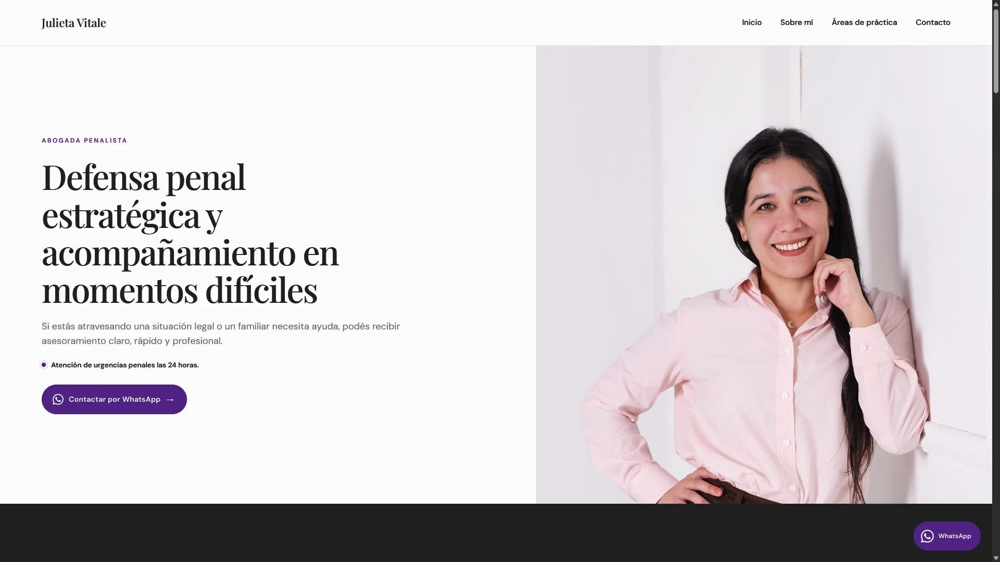
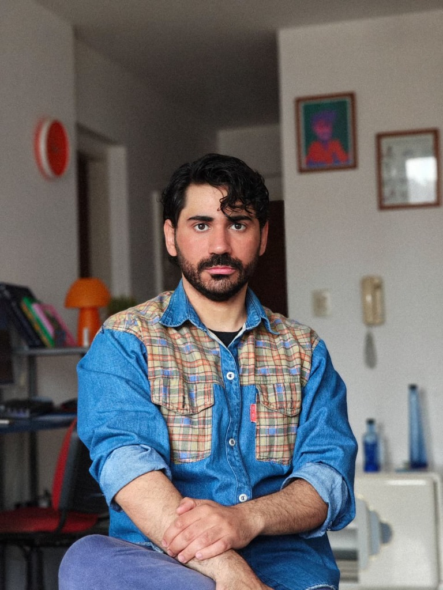

Manifiesto
Crear tu trayectoria es idear un espacio para hablar de vos, sin lógicas algorítmicas, sin distracciones y sin la necesidad de convencer a otros de que tu recorrido merece ser retenido en menos de tres segundos para ser válido.
Un lugar propio donde reunir, organizar y mostrar tu recorrido profesional.
TRAYECTORIAS PROFESIONALES


Jerónimo Bauer
Proyecto en desarrollo

Una web que te exprese como profesional.
El valor de una buena web radica en el diseño, el orden del contenido y una construcción pensada para cada proyecto.
01
Diseñamos juntos
Organizamos tu información, buscamos referencias, definimos qué mostrar y construimos una dirección visual con tipografías, colores y recursos que se adapten a tus necesidades.
02
El proceso
Trabajamos por etapas, desde una primera propuesta hasta la versión final. En cada instancia revisamos lo necesario para avanzar de forma clara y ordenada.
03
Desarrollo y publicación
Adaptamos el sitio a celulares y computadoras, vinculamos tu dominio y dejamos la web publicada, optimizada y lista para compartir.

Sasha Goy · Trayectoria
Soy Sasha Goy.
Fundador y diseñador de Trayectoria.
Trabajo personalmente en el diseño y desarrollo de cada sitio. Me interesa entender qué hacés y encontrar una forma clara y propia de mostrarlo.
Veo a diario profesionales con trayectorias increíbles cuyo trabajo termina presentado en redes sociales o PDFs que rápidamente quedan desactualizados. Frente a las exigencias y cambios constantes de las plataformas, creo que una web puede ser un espacio propio: que te exprese, organice tu trabajo y respete a quien la visita.
Cuando encarás un proyecto en Trayectoria, pensás y tomás las decisiones directamente conmigo.
Empezá tu trayectoria
Empezá tu trayectoria
Contame quién sos, a qué te dedicás y qué necesitás mostrar. A partir de ahí podemos pensar qué tipo de sitio tiene sentido para vos.
Contame sobre tu proyecto →
Sasha Goy — Fundador y diseñador de Trayectoria